Background
Why did I think this website needed a redesign in the first place? In the beginning, this project was not something I would have considered. But my passion for the game lit a fire under me. Lost Ark was developed by the Korean studio Smilegate and published by Amazon Games in the West. Its concurrent players number over 1 million, and concurrent forum users number at least 100,000.
Problem
Lost Ark is a PC game, so naturally the forums are optimized for desktop. Looking at the current mobile view, I could confidently say it was lacking in a few areas. To do this product justice, I took it apart from the bottom up and focused on the mobile UI, which I felt had been neglected because of the nature of the platform.
Goals
- Improve visual hierarchy on the mobile website
- Organize the information to be more readable and user friendly
- Create a more memorable and optimized user experience
UI highlights
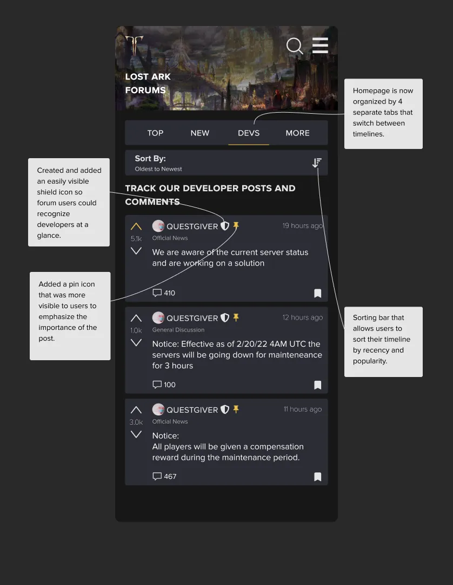
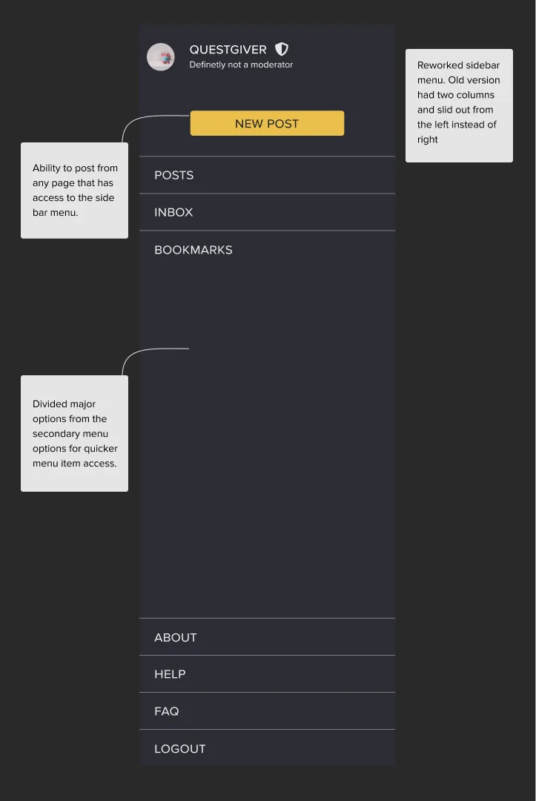
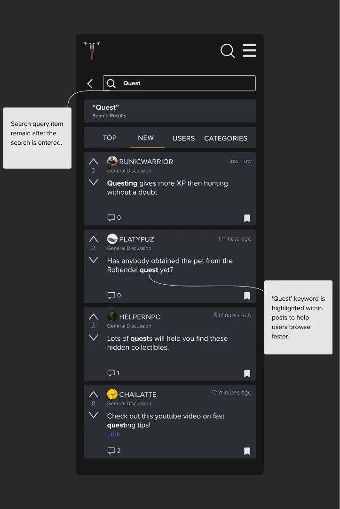
Research
Heuristic analysis, personas and competitive analysis.
Heuristic analysis
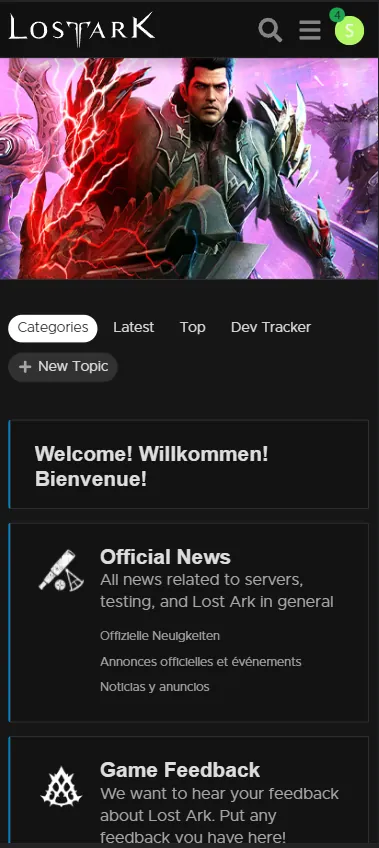
Personas
The developers
They designed both the game and the forums. They visit to listen for major problems, understand the state of the game, and chime in with positivity.
The casual user
Rarely visits the forums or similar platforms. Usually looking for popular news or information. More used to browsing social media than forums.
The super user
Understands the game to its core, posts often, and wants as much fine-grained detail as possible. Keen on developer opinions. Used to forum layouts and features.
Competitive analysis
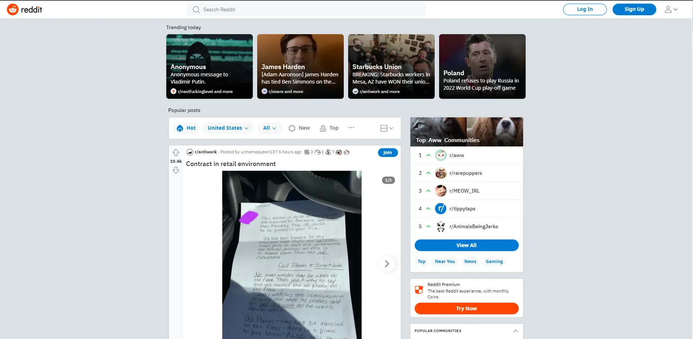
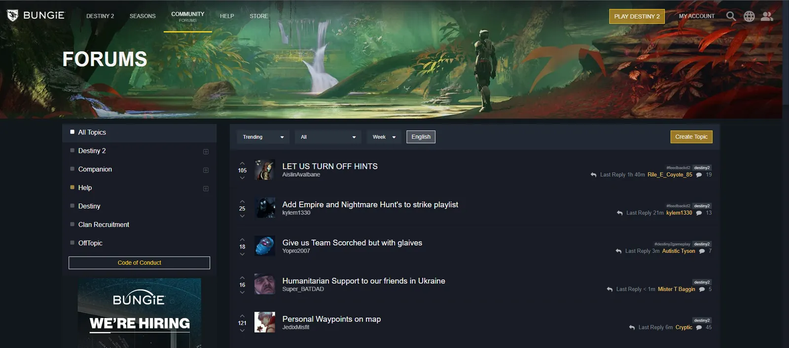
To design a cleaner forum, I looked at two platforms. The first was Reddit, arguably the largest and most popular forum today. Studying their search and filters taught me how to design search for a platform that scales.
I referenced the Bungie forums to see how they organized information. Reddit is good for browsing, but it’s harder to find posts that hold helpful information. Bungie’s is also a game forum, so analyzing its patterns helped me build a better information layout.
Define and design
In this phase I made sure my design would not remove any existing functionality or sever any connections between live pages. To get there, I kept iterating through user flows and sketches until I was satisfied.
User flow
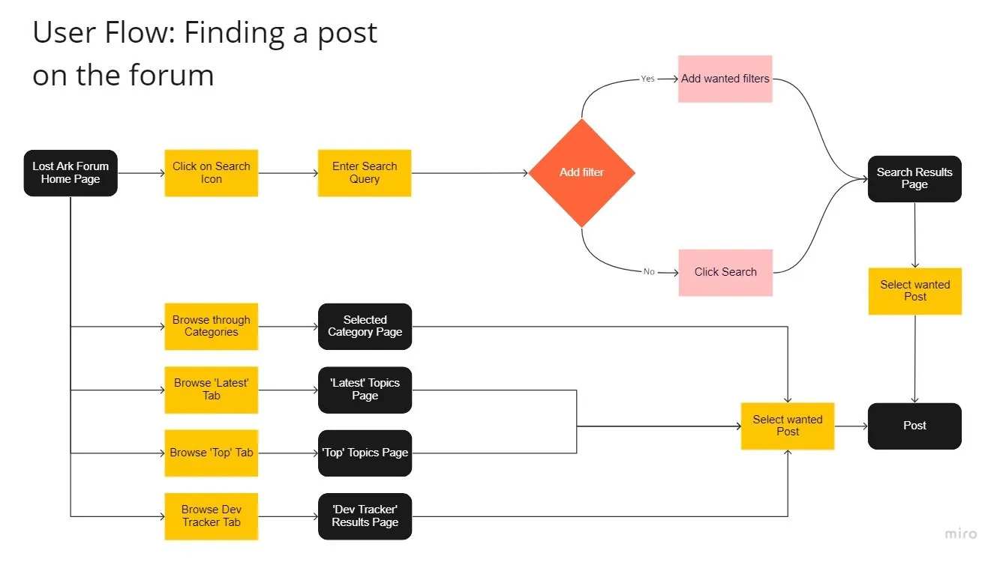
Sketches
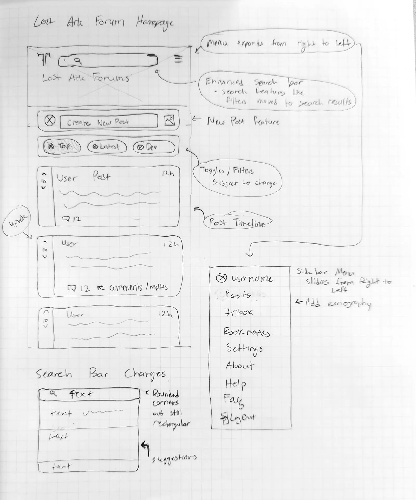
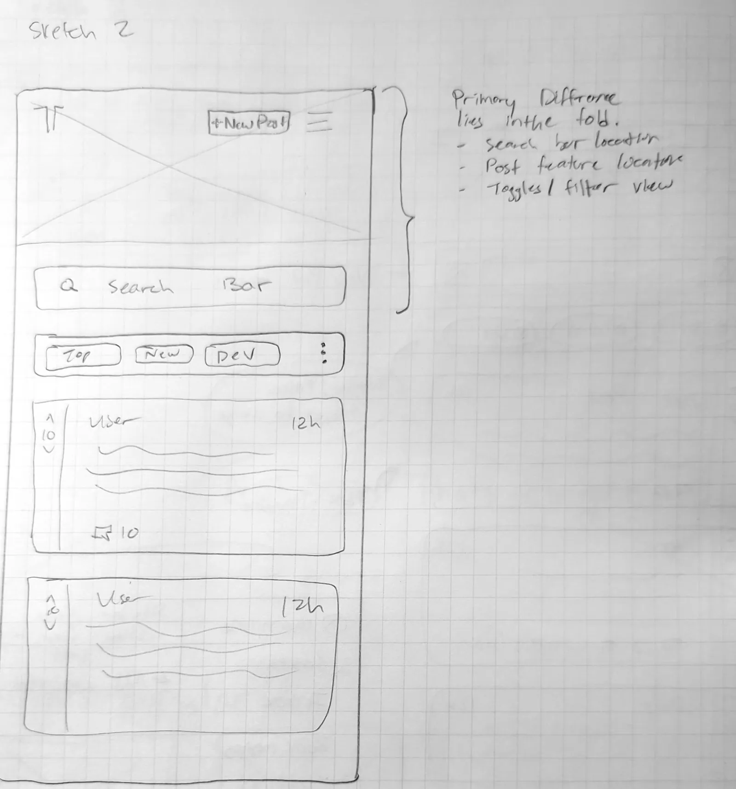
Screens
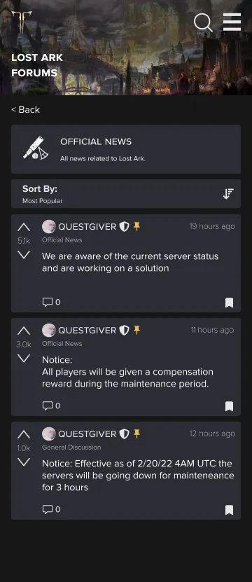
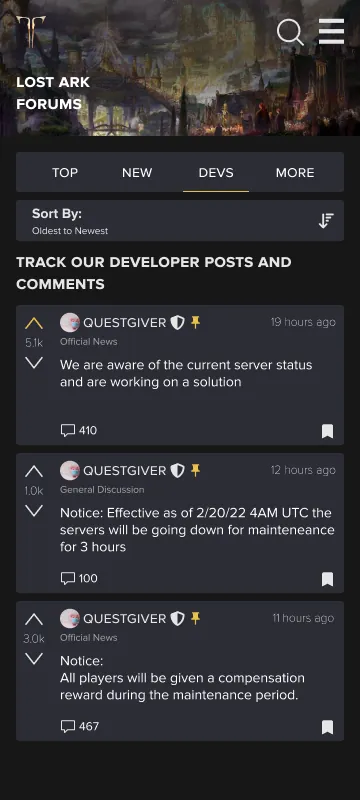
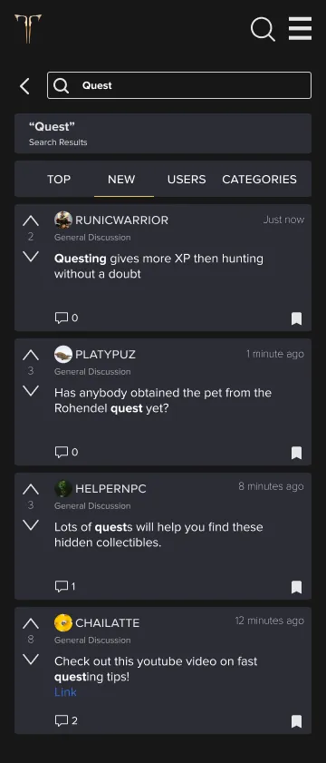
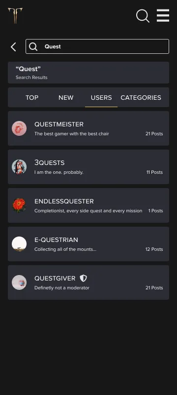
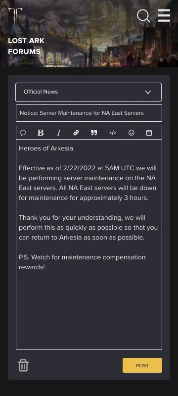
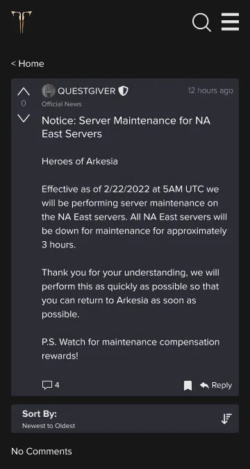
UI kit
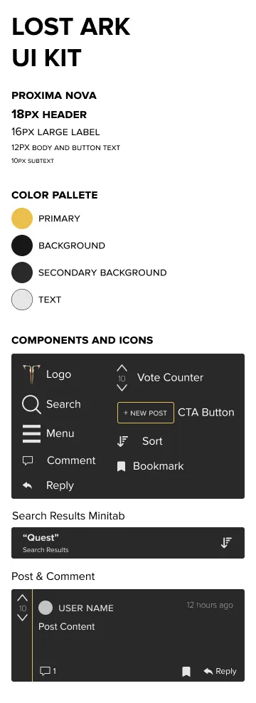
Testing
Prototype
At this stage I expanded the pages needed for an MVP covering 3 main tasks: browsing, searching and posting. Open the Lost Ark prototype in Figma.
Usability testing findings
Navigation
- Navigation considerably improved
- Browsing tabs sped up content consumption
- Creating a new post needs more entry points
- Vital information is more visible and organized
Design
- Branding stayed consistent with the live version, with small color swaps
- Better spacing gave the screen room to breathe
General
- Tasks took about 10 seconds less on average
- Stronger visual feedback was suggested
- The language toggle should stay, nested in the menu
Considerations
- A light mode design
- More personality in user profiles
- Mega threads
- Direct messaging
Final remarks
What started as a passion project turned into something tangible. A warm reception motivated me to keep improving the design.
Over 2 weeks I went through about 5 design iterations, adding components, removing what wasn’t needed, and refining the experience within an 80-hour budget. It’s not a perfect product, but I achieved my 3 initial goals: better visual hierarchy, more readable information, and a more memorable experience.
Something I learned is to never get too attached to your designs. Seeing your work scrapped or changed can be disheartening, but it hasn’t been thrown away. It has evolved and improved through the iterative design process.
Next, I’d refine the design so no key features are forgotten, so that if it replaced the old system, no users would be left out. This prototype covered 3 primary use cases and left out sub-cases like user settings and bookmarks, which matter just as much.
Thank you for taking the time to read through this case study.